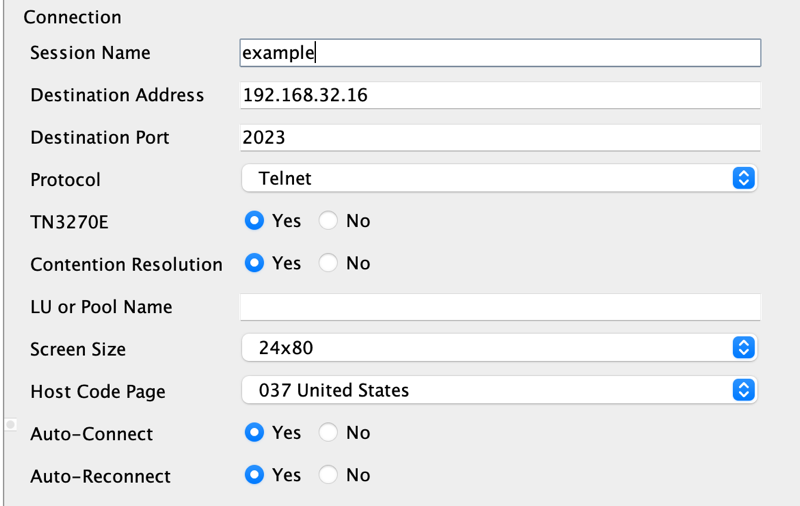
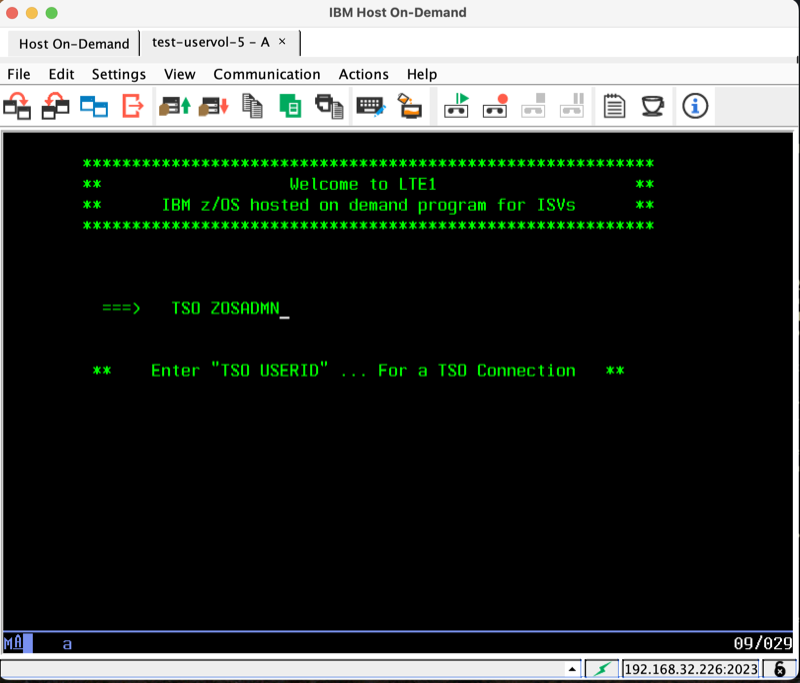
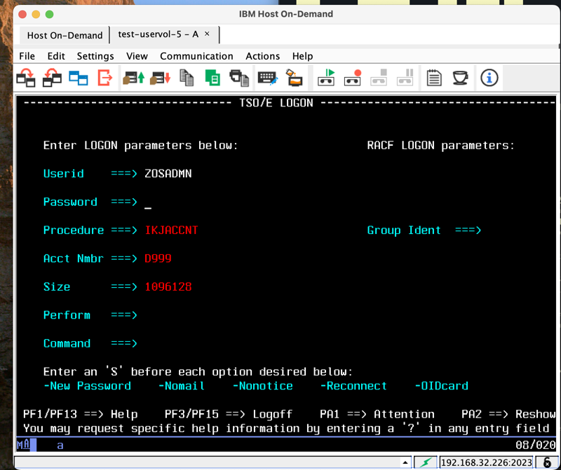
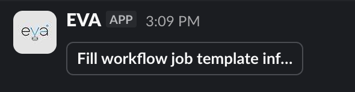
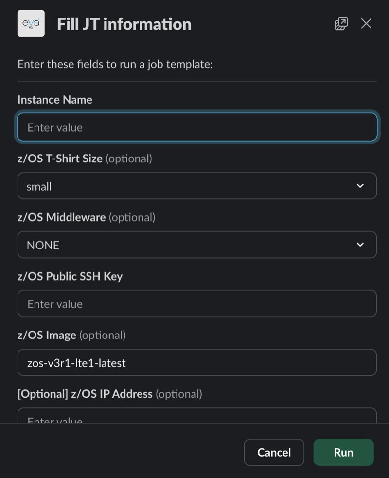
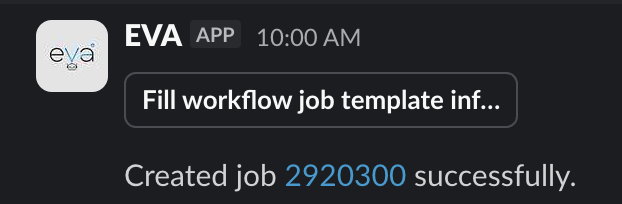
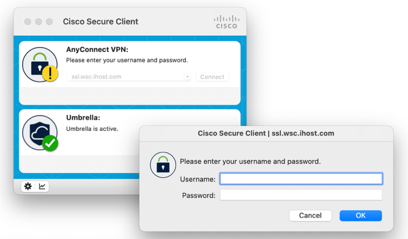
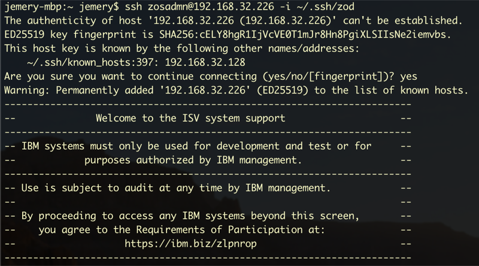
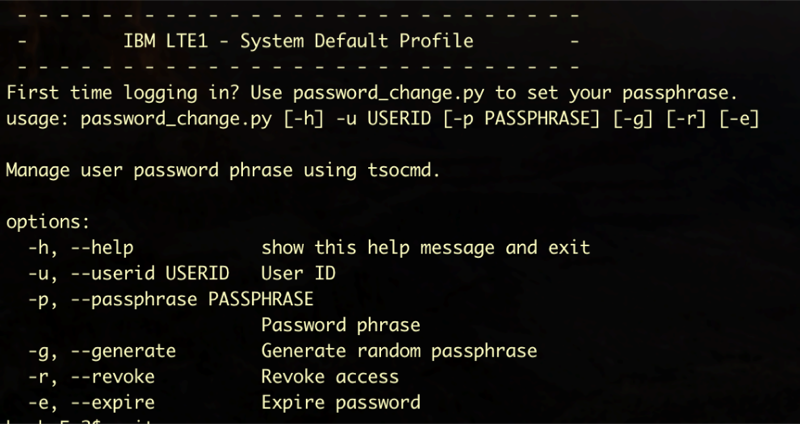

Connecting to Your Instance
Learn how to connect to the provisioned z/OS demo instance.
Prerequisites
Before connecting, ensure the following are available:
- Provisioned z/OS instance from TechZone
- WSC VPN credentials
- z/OS IP address (provided after provisioning)
- 3270 terminal emulator installed
Connection Steps
1. Connect via SSH to Set TSO Password
Before connecting to TSO via 3270 terminal, the TSO password must be set via SSH.
1.1 Connect to WSC VPN
First, connect to the WSC VPN using Cisco AnyConnect:
- Server:
ssl.wsc.ihost.com - Use the WSC VPN credentials
1.2 SSH to z/OS Instance
Open a terminal and connect via SSH:
ssh zosadmn@192.168.32.16 -i ~/.ssh/id_rsa
Replace 192.168.32.16 with the actual z/OS IP address.

1.3 Set TSO Password
Execute the password change script:
password_change.py -u ZOSADMN -p <new_passphrase>
Follow the on-screen instructions. The passphrase must meet RACF requirements:

RACF Passphrase Rules:
- Maximum length: 100 characters
- Minimum length: 14 characters
- User ID cannot be part of the passphrase
- At least 2 alphabetic characters (A-Z, a-z)
- At least 2 non-alphabetic characters (numbers, punctuation, special characters, blanks)
- No more than 2 consecutive identical characters

2. Connect to WSC VPN (for 3270 Access)
Use Cisco AnyConnect to connect to the WSC VPN:
- Open Cisco AnyConnect
- Enter VPN address:
ssl.wsc.ihost.com - Enter the WSC VPN credentials
- Click Connect

3. Launch Terminal Emulator
Open the 3270 terminal emulator (e.g., IBM Host On-Demand)

4. Configure Connection
Create a new connection with these settings:
- Host: The z/OS IP address (from provisioning email)
- Port:
2023 - Terminal Type: IBM-3278-2
5. Connect to TSO
Once connected, log in to TSO:
TSO ZOSADMN
Enter the password when prompted.




Troubleshooting
Cannot Connect to VPN
- Verify the WSC VPN credentials are correct
- Ensure the correct VPN address is being used
- Check that Cisco AnyConnect is up to date
Cannot Reach z/OS IP
- Confirm connection to WSC VPN
- Verify the IP address is correct
- Check that the instance is running (not stopped)
TSO Login Fails
- Verify the correct username is being used (ZOSADMN)
- Ensure the password was set correctly during provisioning
- Try resetting the password if needed
Next Steps
- Demo Scenarios - Start running demonstrations
- FAQs - Common questions and answers